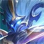

상대 영웅 상세 대응
钟馗
한 줄: 갈고리를 빼고, 빗나간 뒤.
상대 특성
갈고리 제어 보조 계열. 갈고리로 아군을 끌어와 제어 콤보를 만들고, 궁극기로 흡수한다.
라인전 대응
중퀘의 갈고리 각을 주지 않도록 미니언 뒤에서 움직이고, 갈고리가 빗나간 뒤 2스킬로 붙잡는다.
교전·한타
아군 딜러와 일직선을 만들지 않고, 중퀘가 갈고리를 쓴 뒤 점사한다.
하지 말 것
미니언 뒤에서 일직선으로 서서 갈고리를 맞는 것.
상세 스킬
4개중국판 공식 스킬 설명입니다. 스킬명·쿨다운·수치는 패치에 따라 달라질 수 있으므로 게임 내 최신 설명을 우선하세요.
-
패시브
制裁仪式
被动：钟馗受到单次伤害超过10%当前生命会引发爆炸，对附近的敌人造成60(+60%法术攻击)(+3%最大生命)法术伤害，引发爆炸有2秒冷却。 钟馗死亡3秒后会引爆自身，对自身附近的敌人造成240( +240%法术攻击)(+12%最大生命)法术伤害
-
1스킬
虚空清道者
钟馗以虚空之力锤击地面，对范围内的敌人造成320/384/448/512/576/640（+32%法术加成）点法术伤害并减少30%移动速度，持续1秒；在钟馗身边的敌人受到250%伤害并减少30%移动速度，持续2秒
-
2스킬
湮灭之锁
钟馗投出钩锁并将首个命中的敌人拉至身前，并造成550(+60%法术攻击)法术伤害，同时为其添加标记，轮回吞噬的每次吞噬会将标记的敌人晕眩0.5秒。 被动:钟馗每次击败英雄或助攻会获1层虚空噬魂，每层增加180点生命，最多叠加20层。
-
3스킬
轮回吞噬
钟馗张开虚空身躯，对敌人发动最多16吞噬效果，共造成1920（+288%法术加成）点法术伤害。钟馗每次吞噬时获得60（+6%法术攻击）点护盾。
탱커 기본: 스킬·유세·콤보·빌드·라인전 원칙은 元流之子 坦克 기본 운영에서 먼저 확인할 수 있습니다. 이 페이지는 钟馗 상대에 맞춘 대응입니다.